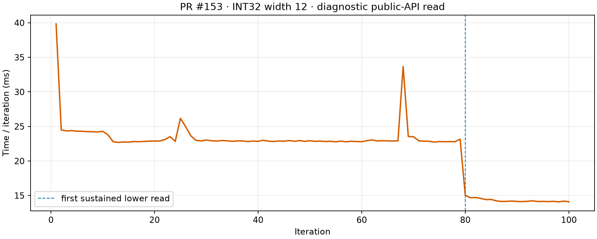

What changes near two seconds?
September 29, 2026 · Ryzen 9 7900X · exact PR #153 2209d94 · one CPU · AVX2 and AVX-512 disabled. Diagnostic EventPipe probe calls the published SyntheticInt32DeltaBinaryPackedColumnPlankBenchmarks.Read method through the Plank public API for 100 ordered reads of a preexisting width-12 fixture (1 million rows × 22 columns). This is a diagnostic trace, not a BenchmarkDotNet acceptance comparison.

The first sustained faster read is iteration 80. Every read returned checksum 22,000,000; the probe recorded no GC collections.
Observed Tier 1 loads
| Decoder method | Time from process start |
|---|---|
| DecodeInt32MiniBlock | 2014.8 ms |
| DecodeInt32MiniBlockFast | 2016.5 ms |
| ReadPackedWord | 2028.3 ms |
| ReadInt32Batch | 2090.2 ms |
ReadInt32Blocks and the generated DecodeInt32MiniBlockFastW12 were already optimized at 123–124 ms. The other listed methods changed tier around two seconds. Many surrounding column-reader methods also promoted in the same interval, so this trace does not assign the entire time drop to one method.
Generated code at the transition
Tier 0 DecodeInt32MiniBlockFast uses the generic 56-case jump table, then calls the chosen width unpacker. Its Tier 1 body tests bitWidth == 12 first and tail.jmps directly to DecodeInt32MiniBlockFastW12; other widths retain the jump table. Tier 1 DecodeInt32MiniBlock puts the full-chunk fast-path guards up front and tail.jmps to the dispatcher. The width-12 unpacker itself does not tier.
Dispatcher JIT assembly (Tier 0 and Tier 1) · Entry JIT assembly · Ordered samples and method load times (JSON)
The original width matrix measured INT32 decoder revision 6920dca; this diagnostic traces the current PR head. Its INT32 method bodies are identical to that measured revision.